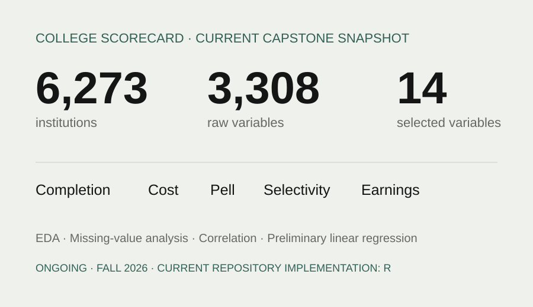
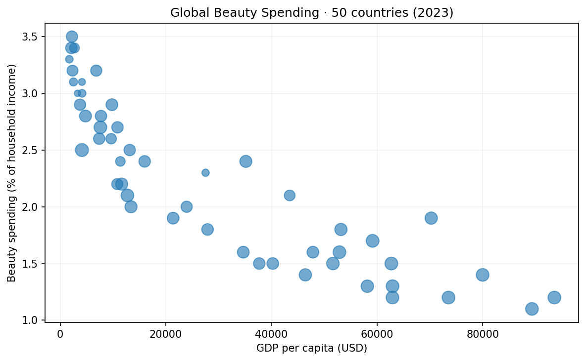
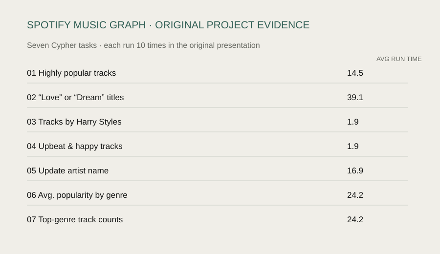

In progress · Fall 2026
01 / EDUCATION ANALYTICS
Higher Education Outcomes
Exploring completion, cost, financial aid, selectivity, debt, and post-graduation earnings across U.S. institutions.
View case study ↗I’m a Data Science and Political Science student interested in how data can help explain patterns in people, markets, and institutions.

Three projects that show how I’ve worked with statistical analysis, interactive visualization, and graph databases.

Exploring completion, cost, financial aid, selectivity, debt, and post-graduation earnings across U.S. institutions.
View case study ↗
Exploring beauty consumption alongside economic development and gender-related indicators across 50 countries.
View case study ↗Building and querying a music knowledge graph connecting tracks, artists, albums, and genres.
View case study ↗
I started with stories — then became interested in the patterns behind them.
From an early statistics project in 2023 to dashboards, sentiment analysis, graph databases, and my current capstone.